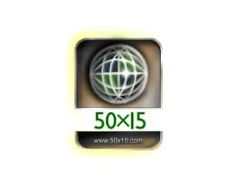
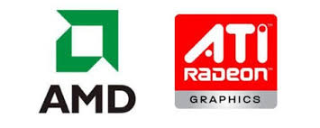
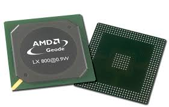

Iniciativa 50X15
Consiste en que la mitad de la población cuente con la capacidad de conectarse a internet para el 2015; esto se logra a través de concursos entre universidades de varios países donde desarrollan las mejores soluciones para cada región del planeta basadas en la tecnología de AMD. Además se cuenta con prestigiosos organismos multilaterales entre los que podemos encontrar a la FAO y UNICEF
AMD / ATI
Después de completar la compra de ATI en 2006, AMD se reestructura como la única empresa en el mundo que provee un abanico de soluciones en todos los ramos de microprocesadores, tarjetas gráficas y chipsets. Así también se convierte en el mayor productor mundial de chips para TV, consolas y telefonía móvil en el mundo, con esto AMD se convierte hoy en día en el mayor rival de Intel en cuanto a soluciones en semiconductores se refiere.A finales del 2010 AMD, de la cual ATI es Filial, anunció que desde la Serie Radeon HD 6000, se reemplazara la marca ATI por AMD para ayudar a impulsar las plataformas AMD Vision y AMD Fusion.
Sistemas integrados

En agosto de 2003 AMD compra también la empresa Geode (originalmente Cyrix MediaGX) a National Semiconductor
para extender su línea, ya existente, de productos x86 para sistemas integrados. A mediados de 2004, lanzó
sus procesadores Geode de bajo consumo con velocidad máxima de 1,4 GHz y consumo máximo de 19W.
Existen 3 familias de procesadores dentro de la gama de procesadores Geode:
- AMD Geode LX, especialmente pensado para "Cliente liviano" basados en plataformas x86, "set-top boxes"
interactivos, ordenadores "single-board", Agendas personales (PDAs), y dispositivos móviles para Internet
y de entretenimiento.
- AMD Geode NX, pensado para "Cliente liviano", terminales punto de venta (TPV), kioskos, impresoras de
alto rendimiento y sistemas multimedia para el hogar.
- AMD Geode GX 533@ 10,1W Processor, especialmente pensado para aplicaciones de Internet de banda ancha, y además con un consumo de tan solo 10,1 W.